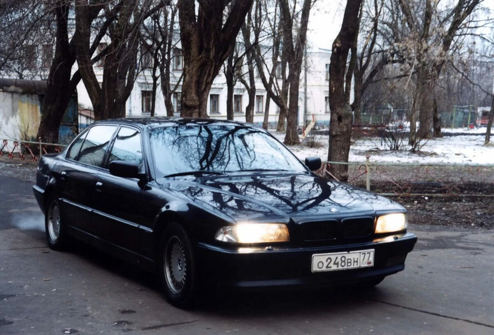
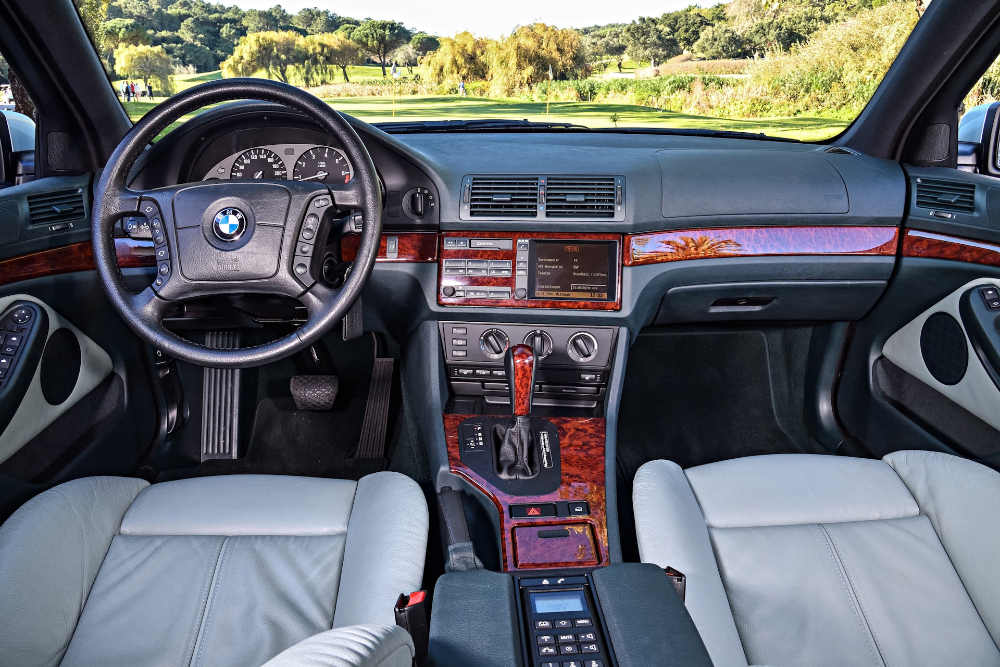

Автомобиль выпускался с 2000 по 2003 год в кузове седан и универсал (Touring). BMW 528i E39 – эта модификация производилась с 1995 по 2001 год и была доступна с БМВ М52. С сентября 1998 года на 39-ю установлен обновленный двигатель обозначенный индексом TU, а система Single VANOS была заменена на Double V ANUS.

Машина e39 снималась в фильме "Бумер"
Благодаря российскому фильму «Бумер» вырос и без того высокий спрос на автомобили BMW. После выхода драмы «бэхи» завоевали небывалую популярность в РФ и странах СНГ. Среди баварских автомобилей, на которых передвигались главные герои кинокартины, были разные модели. Вспомним, какие машины представлены в криминальной драме Петра Буслова.
Первыми странами, в которых началась продажа этих автомобилей, стали Германия и Великобритания. С 1996 года линейка модификаций новой "пятерки" практически каждый год пополнялась. Так, в 1997 году появилась версия в кузове универсал (Touring), в 1998 спортивная модификация M5 в кузове седан, а в 1999-м с конвейера сошла недорогая дизельная BMW 520d.
Дизайн кузова – главное эстетическое и техническое отличие БМВ 5-ой серии в кузове E39 от предыдущих поколений автомобилей. Внешний вид BMW стал намного агрессивнее с появлением спрятанных под узкие обтекатели передних фар, фирменной раздвоенной радиаторной решетки, изящно вписанной в хищный «клюв» капота, покатой крыши, покоящейся на мощном основании стойки. Колесная база автомобиля по сравнению с предыдущими поколениями увеличилась на 70 мм, при этом кузов почти не стал длинее - за счет более коротких свесов. Кузов ощутимо прибавил в жесткости, но автомобиль отнюдь не стал тяжелее, наоборот, массу удалось слегка редуцировать. В соответствии с современным развитием технологий при производстве многих элементов автомобиля, например, рулевых тяг или рычагов подвески, использовался алюминий, что и позволило снизить общий вес автомобиля в кузове седан по сравнению с предыдущей модификацией.
Салон
Упомянем и качество отделки, которое значительно улучшилось у четвёртого поколения «пятёрок». В обоих случаях в основном машины выпускались с двумя видами обивки сидений – кожа и ткань. В некоторых случаях они смешивались и представляли собой комбинированную смесь из этих двух материалов. Сиденья были тканевыми, а боковые части и подголовники кожаными. Цветовая гамма не пестрит разнообразием: чёрные, белые, иногда бежевые и совсем уж редкие красные оттенки. Качество кожаного салона на всех BMW всегда было отменным, а вот о ткани поговорим подробнее.